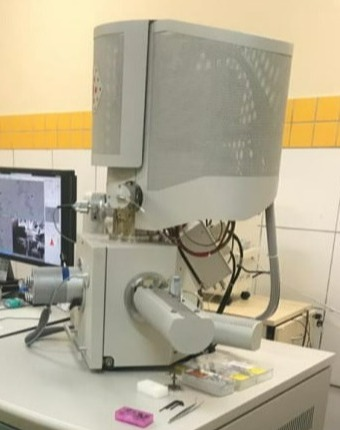
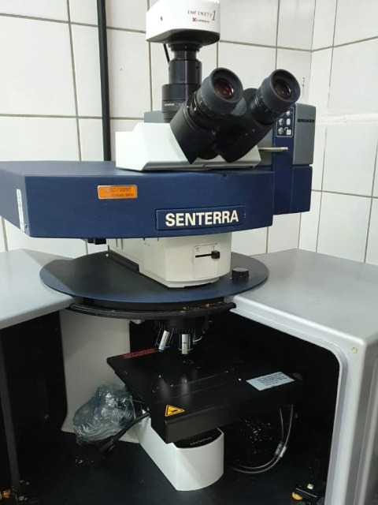
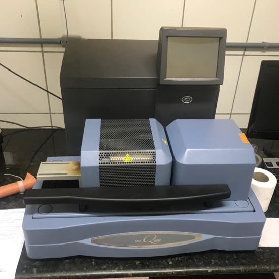
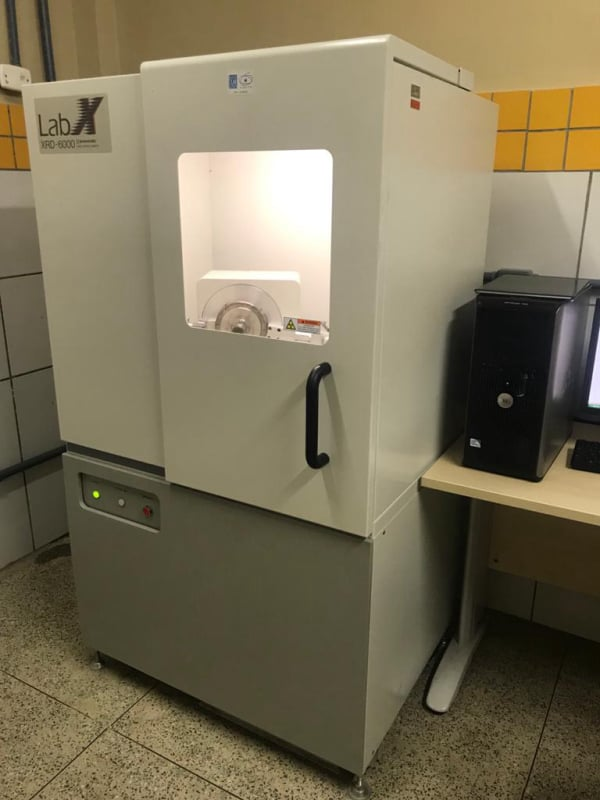
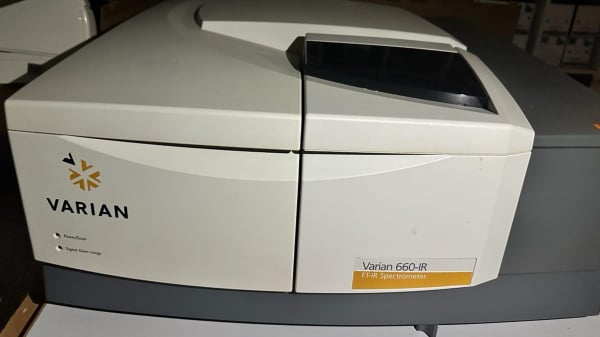
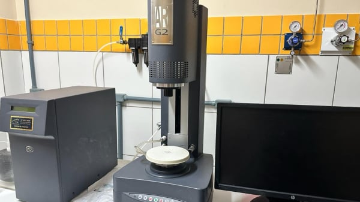

LIMAV - LABORATÓRIO INTERDISCIPLINAR DE MATERIAIS AVANÇADOS
O Laboratório realiza pesquisas científicas e tecnológicas em novos materiais, utilizando técnicas avançadas de caracterização e testes de funcionalidade.
Nossos Equipamentos

Microscópio eletrônico de varredura com detector de raios-X (EDS)
Status de funcionamento: Ativo
Código patrimonial:
Nome do equipamento: Microscópio eletrônico de varredura com detector de raios-X (EDS)
Marca e modelo: FEI – Thermofisher, Modelo: Quanta 250 FEG
Especificações técnicas: Microscópio eletrônico de varredura com alta resolução por emissão de campo, vácuo variável, detector de raios-X (EDS), modo transmissão, elétrons secundários e retroespalhados.

Microscópio/espectrômetro Raman confocal
Status de funcionamento: Ativo
Código patrimonial:
Nome do equipamento: Microscópio/espectrômetro Raman confocal
Marca e modelo: Bruker, Modelo Senterra
Especificações técnicas: Microscópio/espectrômetro Raman confocal com laser 785 nm e 532 nm.

Analisador termogravimétrico com calorimetria exploratoria diferencial
Status de funcionamento: Inativo
Código patrimonial:
Nome do equipamento: Analisador termogravimétrico com calorimetria exploratoria diferencial
Marca e modelo: TA Instruments, modelo: SDT Q600
Especificações técnicas: Equipamento para análise termogravimétrica e calorimetria exploratoria diferencial.

Difratômetro de Raios X
Status de funcionamento: Inativo
Código patrimonial:
Nome do equipamento: Difratômetro de Raios X
Marca e modelo: Shimadzu, Modelo: XRD-6000
Especificações técnicas: Difratômetro de Raios X de geometria Bragg Brentano e fonte de Cu (1,54 Å)

FT-IR
Status de funcionamento: Inativo
Código patrimonial:
Nome do equipamento: FT-IR
Marca e modelo: Agilent Technologies, Modelo: FT-660
Especificações técnicas: O FT-660 é um espectrômetro de infravermelho por transformada de Fourier (FT-IR) da Varian (agora Agilent Technologies). Ele emprega a técnica de FT-IR para obter espectros de absorção/transmissão de amostras na região do infravermelho médio. Algumas características principais: Faixa espectral: Tipicamente 7800 - 350 cm-1 (infravermelho médio) Detector: DTGS (sulfato de triglicina deuterada) resfriado por Peltier Divisor de feixe: Germânio revestido Resolução: Até 0,5 cm-1.

Reometro
Status de funcionamento: Inativo
Código patrimonial:
Nome do equipamento: Reometro
Marca e modelo: TA INSTRUMENTS, Modelo: AR-G2
Especificações técnicas: O AR-G2 é um reômetro rotacional de alta performance da TA Instruments para caracterização reológica de materiais complexos. Apresenta design robusto em aço inoxidável, transdutor de torque de alta sensibilidade, geometrias intercambiáveis aquecidas/resfriadas e motor de arrasto eletromagnético sem escovas. Oferece ampla faixa de taxas de cisalhamento/deformação e controle preciso de temperatura de -20°C a 200°C com sistema Peltier. Controlado pelo TRIOS integrado com recursos avançados.